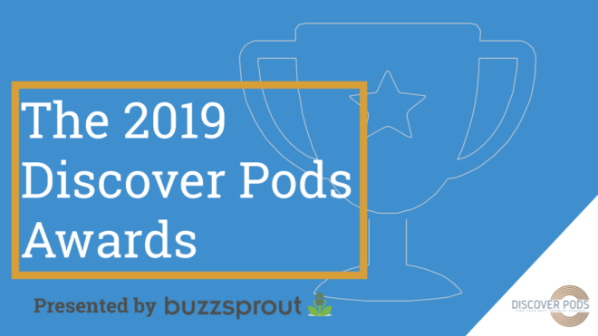
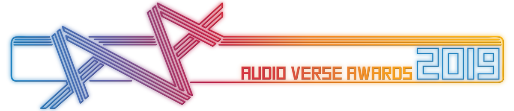

Individually, they are unsettling. Together they begin to form a picture that is truly horrifying because as they look into the depths of the archives, something starts to look back…
Subscribe
Credits
Written and performed by
Jonathan Sims
Directed and produced by
Alexander J. Newall
Recurring Cast
Jonathan Sims as The Archivist
Alexander J. Newall as Martin Blackwood
Ben Meredith
Sasha Sienna
Lydia Nicholas
Mike LeBeau
Alasdair Stuart
Jon Gracey
Paul Sims
Sue Sims
Frank Voss
Hannah Brankin
Lottie Broomhall
Jessica Law
Music By
Samuel DF Jones
Awards


Audio Verse Awards 2019
Winner of 5 Audio Verse awards 2019 including Best Audioplay and Best Writing
Read MorePodcast Awards 2016
Nominee for Best Arts Podcast
Press